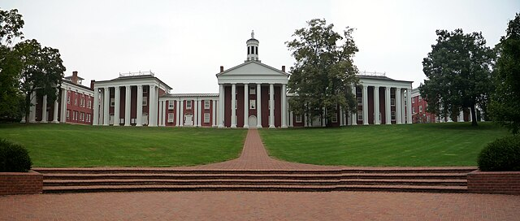
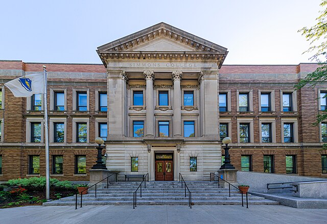

Honors in English, Phi Beta Kappa, summa cum laude

Concentration in Archives Management
Faculty Success Staff Mini-Grant, Texas Tech University (2026) - used to support attendance at Society of Southwest Archivists Annual Meeting
Committee to Assess Research and Organizational Learning (CAROL) Award, Texas Tech University (2024, 2025) - used to support attendance at Society of Southwest Archivists Annual Meetings
David S. Peterson Prize for Distinguished Critical Writing in Medieval and Renaissance Studies (2022) - awarded for Senior Honors Thesis "Reading Like a Mother: A New Approach to the Griselda Tale"
Honorable Mention, Sydney M. B. Coulling Prize for Best Senior Work in English (2022) - awarded for Senior Honors Thesis "Reading Like a Mother: A New Approach to the Griselda Tale"
CAMWS Award for Outstanding Accomplishment in Classical Studies (2022)
John M. Evans English Scholarship (2021-2022)
Honorable Mention, Jean Amory Wornom Award for Distinguished Critical Writing (2020) - awarded for "Creating Destruction: Sin and Eve in Paradise Lost"